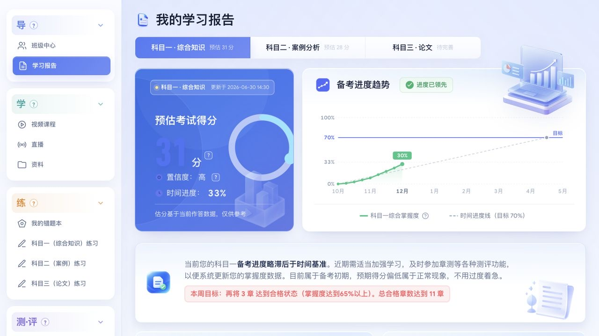
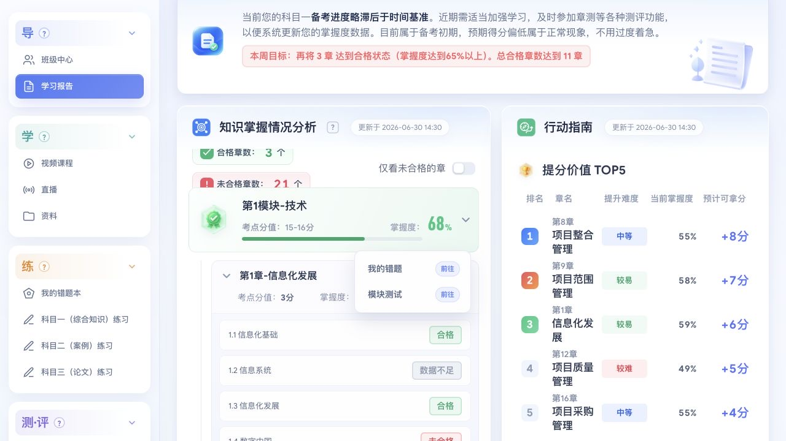

本案例展示
任务导航、班级中心、科目报告、知识掌握状态、章节入口与学习建议。
PRODUCT DESIGN CASE STUDY / 学习体验
精培学习中心
把课程、练习、测评与学习报告，组织成可理解、可继续行动的备考体验。
01 / CONTEXT
软考备考包含课程观看、直播、练习、测评与复习。不同任务产生不同类型的信息：课程有观看进度，练习有答题结果，科目有掌握程度，备考还有时间基准。把这些信息放在同一个产品里，只完成了“能找到”；设计还需要帮助学习者理解“现在怎样、应该做什么”。
本次案例聚焦学习中心的信息组织、学情页面的视觉层级、知识模块的渐进展开，以及报告与练习入口的衔接。页面中的分数、置信度与进度作为界面演示内容，不用于证明实际提分效果。
任务导航、班级中心、科目报告、知识掌握状态、章节入口与学习建议。
估分算法、置信度计算、推荐优先级、数据更新与生产环境权限。
案例依据现有页面、交互状态及项目走查记录展开；不将尚未开展的用户研究或业务效果写成成果。
02 / TASKS & STRUCTURE
导航以“导、学、练、测·评”划分任务。班级中心承担返回起点的作用，学习报告负责阶段判断，课程与练习则承接具体行动。这样的组织方式让页面入口与学习者的下一步行为对应。
班级中心
学习报告
视频课程
直播与资料
错题复习
分科练习
分科测试
阶段模考
了解状态 → 定位薄弱项 → 选择练习 → 更新学情
这条任务路径是对现有方案的结构化归纳，并非经过访谈验证的用户旅程。
03 / DESIGN DECISIONS
报告不应让学习者先读完所有图表，才能得出一个简单结论。我将页面解读为“概况—诊断—行动”三个层级：先建立全局认知，再允许深入，最后提供可继续操作的方向。

用科目切换建立上下文，分数旁保留置信度与说明入口，避免孤立解读。
趋势图将当前状态放进备考时间线，帮助判断学习进度的含义。
用摘要解释状态，再给出具体章节目标，让阅读自然衔接行动。
单独的分数不能完整表达备考状态。页面同时呈现科目、预估分、置信度、时间进度与更新信息，帮助读者理解数字的口径和时效。估分说明保留“仅供参考”，避免将预测表达成确定结果。
取舍：不把所有指标做成同等醒目的卡片。优先突出当前科目的核心状态，解释性信息使用次级层级。
知识内容以模块、章、节组织。默认用模块概况支持扫描，展开后显示章节掌握度与细分状态。对于只想找薄弱项的学习者，提供“仅看未合格的章”筛选，减少反复浏览已经掌握的内容。
取舍：平铺全部章节点会提高首屏密度；全部隐藏又不利于定位。以层级展开兼顾概览与细查。
“继续加油”不能告诉学习者如何安排时间。行动指南把章节名称、当前掌握度、提升难度和优先级放在一起；模块中的错题与测试入口，则让学习者能从诊断位置直接继续操作。
取舍：推荐结果必须能解释来源。优先级与预期收益的算法需要业务验证，界面不能用视觉强调代替可信依据。
04 / INTERACTION & SYSTEM
学情系统中，同样的视觉表达应当指向同样的含义。合格、未合格与数据不足需要明确区分；分数、掌握度和置信度也不能互相替代。

从总体掌握度逐层展开，不在首次进入时堆叠所有明细。
合格、未合格和数据不足用文字与颜色共同表达，区分表现与数据覆盖。
错题、测试与推荐章节连接诊断和练习，减少在不同页面间反复寻找。
| 场景 | 页面响应 | 需要守住的原则 |
|---|---|---|
| 切换科目 | 切换当前报告上下文 | 标题、指标、解释与建议使用同一科目口径 |
| 展开模块 / 章节 | 逐层显示详细内容 | 保持层级位置和展开状态可辨识 |
| 仅看未合格 | 筛选知识内容 | 保持筛选条件可见，能够撤销 |
| 数据不足 | 使用独立状态标签 | 不能被表达成“没有掌握”或“零分” |
| 需要理解估分 | 提供说明与置信度解释 | 说明数据范围、更新信息与使用边界 |
| 窄屏浏览 | 调整内容排列与导航滚动 | 优先保护信息阅读和关键操作 |
蓝紫色强调当前上下文和主要操作。
绿色与文字标签共同传递状态。
警示信息与下一步行动建立关联。
低强调表达辅助信息和数据不足。
三维插画用于建立学习场景与版块识别，图表与业务数据保留为可阅读的页面内容。装饰不应盖住指标、拦截操作或承担唯一的状态说明。
05 / DELIVERY & VALIDATION
本项目可直接访问班级中心与学习报告，查看分科切换、知识模块层级和行动建议。案例中的成果以这些可核验的页面与交互为依据。
任务分组导航、报告信息层级与模块—章—节关系。
班级中心、分科学情、状态标签与图文表达。
科目切换、层级展开、筛选与说明触发。
以上来自项目现有设计 QA 记录；不等同于真实用户测试、无障碍审计或生产系统验收。
下一阶段应与产品和数据团队先确定埋点、观察周期与对照口径，再评估下面三个问题。当前没有可核验的结果，因此不填写提升百分比。
能否找到方向？观察从进入报告到打开目标章节的路径与耗时。
是否继续行动？观察报告之后的错题复习、练习或测试启动。
能否理解数据？通过任务测试确认估分、掌握度和置信度是否被正确区分。
06 / REFLECTION
这套方案最值得保留的，是将学习信息连接成“状态—诊断—行动”。它让设计从数据展示延伸到任务衔接：学习者可以先看概况，再定位薄弱内容，最后回到具体学习。
我的设计关注点，是把复杂业务中的信息、规则和操作连接起来，让界面能够解释问题，也能够承接下一步。
案例整理于 2026 年 11 月。页面截图为演示状态；依据已展示作品与项目走查资料撰写。